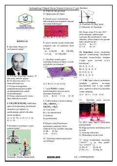

K1Kimyo fanidan turli mavzularni qamrab olgan test savollari to'plami.
Ushbu o'quv qo'llanma kimyo fanidan turli mavzularni qamrab olgan test savollari to'plamidir. Unda atom tuzilishi, kimyoviy bog'lanishlar, oksidlanish-qaytarilish reaksiyalari va organik kimyoga oid masalalar keltirilgan.